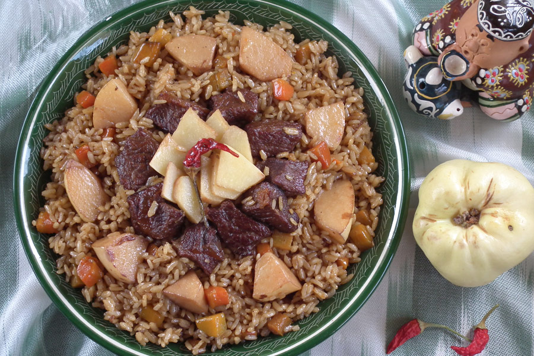

UZBEK PALOV RECIPE

“Palov”, also known as “Osh” is a classical main dish of Central Asian countries. It is rich, filling and very tasty if prepared right.
Nowadays there are many ingredients like garbanzo beans, barberries, eggs, quince, pomegranate incorporated to this dish. But the main ingredients like onions, rice, oil and meat remain unchanged.
Ingredients:
- 2 lbs fresh lamb (better if you have some meat on the bone for the taste)
- 2 medium onions
- 5 medium carrots
- 3.5 cups of rice
- 1 cup of canola oil
- 3 tsp of salt
- 1.5 tsp of ground cumin
- pinch of freshly ground black pepper
- 8 cups of previously boiled water
Directions:
- Clean, wash and julienne carrots
- Cut the onion in half circles measuring 1/4 of an inch. Keep the meat in bigger chunks. The reason why I asked to obtain lamb on the bone is to have a nicely flavored bullion. Bullion is ultimately going to give a delightful taste to the rice. If you are purchasing your meat from a butcher shop they always have meat on the bone. If you do not have the bony meat under your discretion, don’t worry about it and proceed with what you have.
- Heat the medium cast iron pan or a regular non stick pan. Add the oil and heat it on high heat until you see a slight smoke (do not wait too long).
- Once the onions reach the desired color, put ready carrots in the pan. Add remaining salt and cumin. Stir everything well and fry until carrots are relatively soft. Keep stirring every 30 seconds to prevent the carrots sticking to the bottom of the pan.
- Drop the garlic bulb back in the pan.
- Once the rice starts absorbing the water, take out the garlic bulb. Using the skimmer
- Cover the rice with a plate suitable for high temperatures. Put the lid on the pan and TURN THE HEAT DOWN TO LOWEST.
- Cut up the meat into a small cubes and serve it on top of the Palov.
ENJOY!
Back to main page